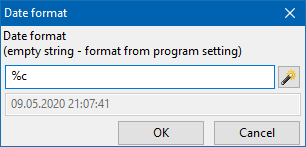

The (:crdate:) and (:eddate:) commands
The (:crdate:) and (:eddate:) commands are placeholders, which are to be replaced with creation and (last) modification date of the current note, respectively.
If no switches are present, then the date format is determined by the corresponding OutWiker setting. However, the format switch allows to override this and use custom format.
For example, the command
08/21/14
forces OutWiker to display the current date in the standard American date format.
It is convenient to dialogue (see below) invoked by menu "Wiki - Commands - Creation date (:crdate:)" and "Wiki - Commands - Edition date (:eddate:)" to enter the (:crdate:) and (:eddate:) commands. The "format" switch (clicking the magic wand button next to the date pattern field results in expanding list of date and time special coding symbols) can be set in the dialogue window as well.
